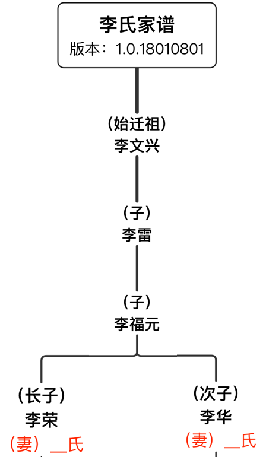
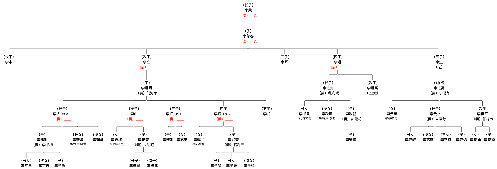
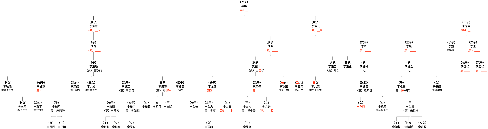

版本：v1.0.18010801
第二修订版
版权：李氏家族
编著：李进亮（七世）、李新保（八世）、李瑞平（九世）、李瑞宇（九世）
修订日期：（农历）二零一七年十一月下
李氏一家于明永乐年间（公元1403年——公元1424年）应诏由山西洪洞县迁此开山种地，置产立庄。
不久，日子越过越红火，便在村西山脚河旁修建了一盘水磨，四乡八邻陆续来此碾米磨面。
之后人们便叫此村为“水磨村”，并沿用至今。
【备注】
1. “永乐”为明朝第三个皇帝明成祖朱棣的年号（公元1403年-公元1424年）
2. 史料来自《沙河县地名资料汇编》-- 河北省沙河县地名办公室
父慈子孝，兄友弟恭，
夫正妇顺，内外有别，
尊幼有序，礼义廉耻。
士农工商，各守一业。



生于一九___年，（农历）____，
生于一九___年，（农历）____，
____年__月__日结婚，出嫁到连庄村，丈夫_____。
生于一九___年，（农历）____，
____年__月__日结婚，出嫁到连庄村，丈夫_____。
生于一九八七年，（农历）____，
____年__月__日结婚，配偶宋燕静。
生于一九六五年，（农历）_____。
生于一九八五年，（农历）腊月二十二，
2005年年末结婚，配偶李爱芳。
生于一九八八年，（农历）八月初八，
2016年10月1日结婚，配偶李路梅。
生于一九九二年，（农历）冬月十八。
生于一九___年，（农历）____，
生于一九___年，（农历）____，
____年__月__日结婚，出嫁到____村，丈夫____。
生于一九___年，（农历）____，
____年__月__日结婚，配偶____。
【备注】
1. “永乐”为明朝第三个皇帝明成祖朱棣的年号（公元1403年-公元1424年）
2. 史料来自《沙河县地名资料汇编》-- 河北省沙河县地名办公室
3. 某XX于一九XX年迁至山西省某某市地区。
4. 某XX于二零零六年改嫁于XXX村，配偶XXX。
5. 某XX于二零零六年将（次子）李XXX送养于XXX村，养（继）父XXX，养（继）母XXX。
5. XXXXX记录考证资料来自于XXXX提供口述，XXXX文字记录。